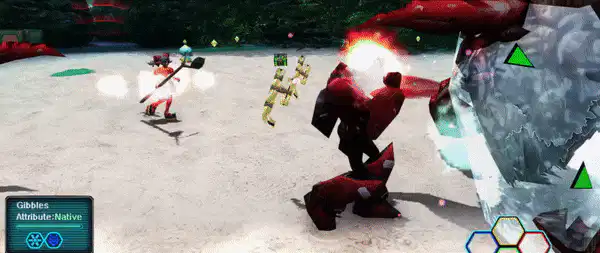

1. What is Damage Cancel (DMC)?

Damage Cancel (DMC) is a phenomenon where, when multiple players attack the same monster at the same time, one player’s damage overwrites another player’s damage, causing it to effectively disappear.
2. Why does this happen?
In PSO, damage is handled in a very specific way.
When a player attacks a monster, the client sends data to the server based on the monster's max HP minus its current HP, not the actual damage dealt.
regardless of the actual damage dealt.
This includes 0 damage hits and status effects such as Jellen and Zalure.
The server then forwards this information to the other players.
- This happens even if:
- The attack deals 0 damage
- The attack only applies status effects such as Jellen or Zalure
3. How the server processes damage
The server forwards this damage data to all other players.
However, the server has a critical flaw:
it always applies the most recently received damage data, no matter what.
It does not compare values or check which damage was higher or lower.
4. What happens as a result
If two or more players attack a monster at nearly the same time,
one player’s damage can overwrite another player’s damage.
Because of this, the monster may appear to take far less damage than expected,
even while being heavily attacked by multiple players.
5. When DMC becomes especially problematic
DMC is most noticeable when using rapid-fire weapons that deal repeated 0 damage, for example weapons like Last Swan.
If 0-damage packets are constantly sent, they can repeatedly overwrite real damage,
making other players' attacks effectively useless and the monster appear almost invincible.
6. Important notes
- Attacks that miss due to ATA do not send damage data
- However, when a special attack fails to activate, a damage packet is sentand can still trigger DMC
7. One-line summary
Damage Cancel (DMC) is a PSO server-side issue where simultaneous attacks can overwrite each other,
especially due to frequent or 0-damage hits, causing monsters to take far less damage than expected.